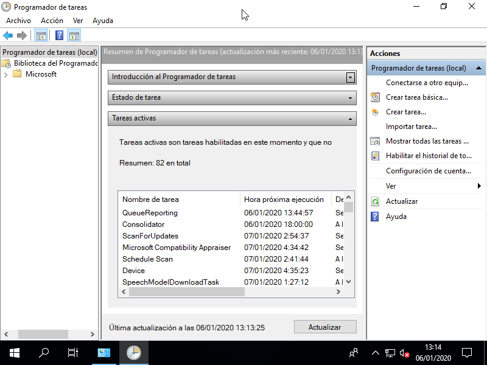

8. Configuración básica de Windows 10¶
Nota
El contenido del tema es sólo una sucesión de aspectos a tratar.
8.1. Descripción del entorno de trabajo¶
Pantalla de inicio (Práctica 1).
Barra de tareas.
Menú de inicio (Práctica 2).
Temas y aspecto (Práctica 2): resolución, monitores, etc.
Cambios de fecha e idioma.
8.2. Gestión del software¶
Actualizaciones del propio sistema operativo: cuál es la política de actualizaciones, cómo se llevan a cabo.
Adición de características de Windows.
Instalación y desinstalación de aplicaciones a través de la tienda de Microsoft.
Instalación y desinstalación de programas obtenidos en la web.
8.3. Configuración de la red¶
Simplemente, se trata de configurar el protocolo TCP/IP para conectar a la red (Práctica 4e).
8.4. Explorador de archivos¶
Estructura de directorios (Práctica 3).
Extensiones de los archivos: asociación a programas (Práctica 4b), visualización de todas las extensiones (Práctica 3e).
8.5. Recuperación del sistema¶
8.5.1. Puntos de restauración¶
Windows 10 permite crear puntos de restauración de sistema operativo (no del sistema de archivos, para lo cual tendríamos que crear copias de seguridad) a través del programa SystemPropertiesProtection.exe, accesible desde las «Propiedades>Protección del sistema» de «Este Equipo» o la sección «Seguridad y mantenimiento» del «Panel de Control». La creación de estos puntos exige primero habilitar la posibilidad reservando una cantidad de espacio en disco para ello.
Ver también
Puede consultar este artículo de genbeta.com sobre restauración.
8.5.2. Copias de seguridad¶
8.6. Automatización de tareas¶
Para programar tareas futuras, periódicas o que deben ejecutarse al producirse alguna circunstancia (p.e. al iniciar sesión), debe utilizarse el Programador de tareas accesible a través de las «Herramientas administrativas».
Crear una tarea básica es relativamente sencillo (puede consultar este enlace de genbeta sobre cómo programar tareas en Windows 10). La lista de tareas definidas por el usuario pueden consultarse en la sección «Biblioteca del Programador de tareas», aunque, si no aparece, habrá que actualizar la vista con el menú contextual (Práctica 5a).
Por otra parte, en el Administrador de tareas hay una pestaña para indicar qué aplicaciones quieren arrancarse durante el inicio (Práctica 5b).
8.7. Ejercicios sobre configuración de Windows 10¶
Una pantalla de acceso a Windows 10, muestra este aspecto:

Se pide:
Identificar las distintas partes que componen la plantilla.
Para cada una de ellas:
Explicar para qué sirve.
Incluir una captura si al pinchar sobre ella se muestra información adicional.
Deducir cuál es el estado de nuestro propio sistema según la información que recibamos.
Lleve a cabo las siguientes operaciones, haciendo una captura o varias capturas que confirmen que es capaz de hacerlas:
Salga de la sesión.
Apague el equipo (pero no desde la pantalla de acceso).
Utilice «Cortana» para abrir la Configuración del Sistema.
Acceda a la aplicación de «Administrador del Equipo».
Acceda a la sección de «Herramientas administrativas».
Acceda a la sección de «Administrador de tareas».
Acceda a la configuración del escritorio para:
Sustituya la imagen de fondo por un color sólido.
Indique dónde puede cambiar la resolución de pantalla.
Deshabilitar el apagado de temporización.
Modifique el menú de Inicio para que aparezcan las aplicaciones más usadas en vez de las más recientemente agregadas.
En los iconos de escritorio:
Elimina el de «Papelera».
Añada el de «Red».
Realice las siguientes operaciones:
Llegue al directorio personal del usuario partiendo del disco C:.
Llegue al directorio donde se guardan las aplicaciones al ser instaladas, partiendo de C:.
Cree un directorio llamado «MisCosas» en D: y dentro de él dos subdirectorios llamados «Documentos» y «Descargas».
Modifique las ubicaciones de «Documentos» y «Descargas» para que sean los directorios anteriormente creados.
Haga que se muestren siempre las extensiones de los archivos, incluso aunque sean de tipos conocidos.
Compruebe que al crear un fichero con el Block de notas y guardarlo en «Documentos», se almacena en D:, no en C:.
Compruebe que al descargar una imagen de Internet se almacena en D:.
Indicar cuál es la ocupación de C: y D:
Lleve a cabo las siguientes acciones:
Busque en internet la aplicación «Visual Studio Code» (¡ojo!, no «Visual Studio») e instálela en el sistema.
Asocie los archivos de extensión RST para que se abran con esta aplicación.
Cree un fichero vacío con esta extensión y compruebe que se abre automáticamente con la ella.
Desinstálela.
Acceda a la configuración de red y consulte cuál es. Actívela y desactívela.
Consulte la información de su sistema (procesador, memoria, versión del sistema operativo, etc.)
Compruebe que su sistema dispone de cortafuegos y de que éste está activo (Windows Defender).
Configure el sistema para que:
Se apague de lunes a viernes a las 15:00 y a las 23:00 de la noche.
Al iniciar la sesión del usuario, se abra automáticamente el explorador de archivos.